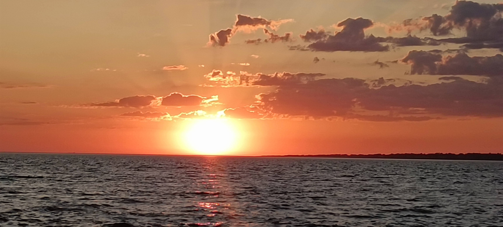
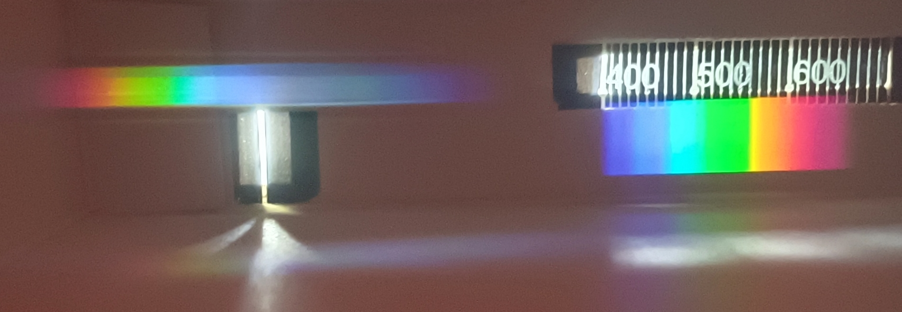
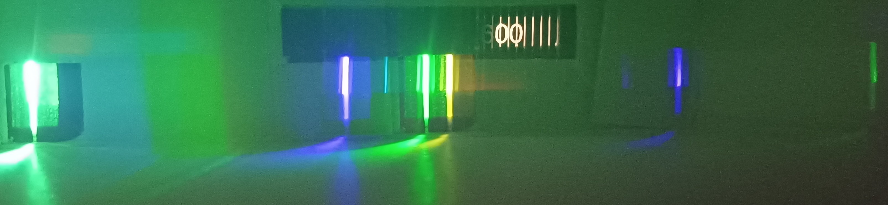
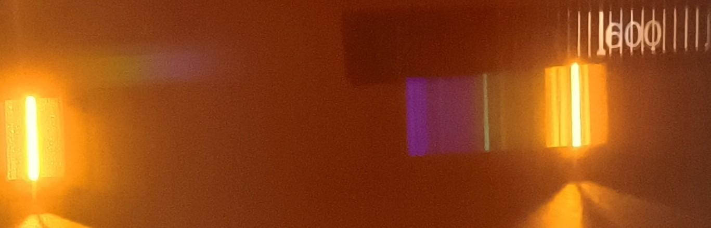

Dispersion de la lumière : un prisme ou un réseau dévie différemment les différentes couleurs qui composent une lumière ; on obtient ainsi son spectre.
Longueur d'onde dans le vide ou dans l'air : elle caractérise une radiation lumineuse et s'exprime en mètre (souvent en nanomètre, 1 nm = 10⁻⁹ m). Le domaine du visible s'étend approximativement de 400 nm (violet) à 800 nm (rouge).
Une radiation lumineuse monochromatique est caractérisée par sa longueur d'onde dans le vide (en m) et sa fréquence (en Hz). Ces deux grandeurs sont liées par la célérité de la lumière dans le vide c = 3,00×10⁸ m·s⁻¹ :
Plus la longueur d'onde est petite, plus la fréquence — et donc l'énergie transportée — est grande (cf. onglet « Photon & niveaux d'énergie »).
La lumière visible n'est qu'une toute petite partie du spectre électromagnétique. On peut situer un domaine spectral en comparant sa longueur d'onde (ou sa fréquence) à celles du visible.
| Domaine | Longueur d'onde (ordre de grandeur) | Exemple d'application |
|---|---|---|
| Ondes radio | > 1 m | Radiodiffusion FM |
| Micro-ondes | ≈ 1 cm à 1 m | Four à micro-ondes, wifi |
| Infrarouge (IR) | 800 nm – 1 mm | Télécommande, imagerie thermique |
| Visible | 400 nm – 800 nm | Vision humaine |
| Ultraviolet (UV) | 10 nm – 400 nm | Stérilisation, bronzage |
| Rayons X | < 10 nm | Imagerie médicale (radiographie) |
La même information que le tableau ci-dessus, replacée sur une échelle logarithmique commune en fréquence et en longueur d'onde — le domaine visible n'occupe qu'une fraction infime de tout le spectre électromagnétique.
Unités SI — λ en mètre (m) · c en m·s⁻¹ · T en seconde (s) · ν en hertz (Hz)
▶ Source d'inspiration — Frise interactive « Domaines spectraux » (Genially)Un corps porté à haute température émet de la lumière : c'est l'incandescence. Plus la température est élevée, plus le spectre est riche vers les courtes longueurs d'onde (le corps devient « blanc chaud »).
- Le Soleil et les étoles
- Le filament d'une ampoule à incandescence
- La lave, les braises
Une source froide émet de la lumière sans élévation de température importante, par exemple lors d'une décharge électrique dans un gaz (luminescence).
- Lampes à vapeur de mercure ou de sodium (éclairage public)
- Tubes néon, LED
- Aurores polaires, vers luisants (bioluminescence)
Un spectroscope (ou spectromètre) est l'appareil qui permet d'observer le spectre d'une lumière. Il comporte toujours :
- une fente fine par laquelle entre la lumière à étudier ;
- un élément dispersif — un prisme ou, le plus souvent, un réseau de diffraction — qui dévie différemment chaque longueur d'onde ;
- une échelle graduée (en nm) sur laquelle se projette le spectre obtenu, ou un capteur qui l'enregistre.
On regarde directement, à travers le spectroscope, la lumière émise par la source étudiée (lampe à vapeur de mercure ou de sodium, filament chaud…). On observe alors exactement les radiations réellement émises par cette source : spectre continu pour une source chaude, spectre de raies pour une source froide.
On place un gaz plus froid que la source sur le trajet de la lumière issue d'une source chaude à spectre continu, puis on observe à travers le spectroscope. Les longueurs d'onde absorbées par le gaz manquent alors à l'arrivée : elles apparaissent comme des raies noires sur le fond continu coloré.




La photosphère (surface du Soleil) émet bien un spectre continu, car c'est une source chaude. Mais cette lumière traverse ensuite des couches de gaz plus froids — la chromosphère solaire, puis l'atmosphère terrestre. Les atomes de ces gaz absorbent exactement les longueurs d'onde qui correspondent aux écarts d'énergie entre leurs niveaux : ces radiations manquent alors à l'arrivée, ce qui crée des raies noires dans le spectre continu.
- Spectre continu (polychromatique) : émis par une source chaude ; toutes les radiations d'un domaine sont présentes.
- Spectre de raies (discontinu) : émis par une source froide (gaz sous faible pression) ; seules certaines radiations bien précises sont émises. Chaque élément chimique possède son propre spectre de raies, comme une « carte d'identité ».
En 1905, Albert Einstein propose que l'énergie de la lumière est transportée par « paquets » : les quanta de lumière, appelés plus tard photons. On parle de modèle particulaire de la lumière, complémentaire du modèle ondulatoire : selon le phénomène étudié, on utilise l'un ou l'autre.
Un photon :
- a une masse nulle et se déplace dans le vide à la célérité c = 3,00×10⁸ m·s⁻¹, quelle que soit sa couleur ;
- transporte un quantum d'énergie, c'est-à-dire une quantité d'énergie bien déterminée, qui dépend de la radiation ;
- est échangé en entier : un atome l'absorbe ou l'émet en totalité, jamais en partie.
- E : énergie d'un photon, en joule (J) ;
- h = 6,63×10⁻³⁴ J·s : constante de Planck ;
- ν : fréquence de la radiation, en hertz (Hz) ;
- c = 3,00×10⁸ m·s⁻¹ : célérité de la lumière dans le vide ;
- λ : longueur d'onde dans le vide, en mètre (m).
En physique atomique, l'énergie est souvent exprimée en électronvolt (eV), avec 1 eV = 1,60×10⁻¹⁹ J.
Chaque paquet d'onde représente un photon. Clique sur une situation de la vie courante, puis fais varier la luminosité : qu'est-ce qui change ? Qu'est-ce qui ne change pas ?
Imagine que chaque photon est une pièce de monnaie dont la valeur dépend de sa couleur : un photon bleu est une « pièce » de plus grande valeur qu'un photon rouge.
Une lumière plus intense revient à recevoir plus de pièces, pas des pièces de plus grande valeur.
Limite de cette image : des pièces s'additionnent. Un atome, lui, n'additionne pas deux photons pour changer de niveau d'énergie : dans le cadre de ce cours, un seul photon doit apporter exactement l'énergie nécessaire.
Calculer l'énergie d'un photon de longueur d'onde λ = 589 nm, en joule puis en électronvolt.
Conversion : λ = 589 nm = 589×10⁻⁹ m
Formule : E = h × c / λ
Calcul : E = 6,63×10⁻³⁴ × 3,00×10⁸ / (589×10⁻⁹)
Résultat : E = 3,38×10⁻¹⁹ J
En électronvolt : E = 3,38×10⁻¹⁹ / 1,60×10⁻¹⁹ = 2,11 eV
Modèle non à l'échelle : un photon n'est ni une bille ni un petit serpent. Le paquet d'onde est une image qui rappelle les deux modèles de la lumière. Une vraie lampe émet des milliards de milliards de photons par seconde.
Niels Bohr, en 1913, a postulé que l'énergie d'un atome ne peut prendre que certaines valeurs bien définies : on dit que l'énergie d'un atome est quantifiée. Un atome ne peut exister que dans des états bien définis, chaque état étant caractérisé par un niveau d'énergie.
- L'état de plus basse énergie est appelé état fondamental : c'est l'état le plus stable, dans lequel l'atome se trouve en l'absence d'apport extérieur d'énergie.
- Les autres états, d'énergie supérieure, sont appelés états excités : un atome excité est instable et retourne spontanément vers un niveau d'énergie inférieur.
Spectre d'absorption
Lors d'une transition d'un niveau donné vers un niveau supérieur, l'atome reçoit de l'énergie. Cette transition peut être provoquée par l'absorption d'un photon dont l'énergie E est exactement égale à la différence d'énergie entre les deux niveaux :
Spectre d'émission
Lors d'une transition d'un niveau donné vers un niveau inférieur, l'atome cède de l'énergie : il y a émission d'un photon dont l'énergie est égale à la diminution d'énergie de l'atome :
Choisis un atome, règle la longueur d'onde, puis envoie un photon. Quels photons l'atome absorbe-t-il ? Compare l'énergie E du photon aux écarts entre les niveaux d'énergie de l'atome.
Modèle simplifié et non à l'échelle : seuls deux niveaux excités sont représentés pour chaque atome (valeurs arrondies, données NIST). Dans un vrai gaz, un très grand nombre d'atomes interviennent.
Le Soleil est une source chaude : son spectre est continu. Mais en l'observant avec un spectroscope suffisamment précis, on constate qu'il est en réalité strié de fines raies noires : ce sont les raies d'absorption de Fraunhofer. Clique pour les révéler.
Déplace le curseur pour explorer le spectre visible et lire la longueur d'onde, la fréquence et le domaine spectral associés.
Renseigne une seule des trois grandeurs puis clique sur « Calculer » : les deux autres seront déduites à partir de E = h × fréquence = h × c / longueur d'onde.
Astuce : la raie jaune du sodium a pour longueur d'onde environ 589 nm — essaie de retrouver son énergie en eV !
Choisis un niveau de départ et un niveau d'arrivée pour un atome fictif possédant 4 niveaux d'énergie, puis clique sur « Tracer la transition » pour voir s'il s'agit d'une absorption ou d'une émission, calculer l'énergie, la fréquence et la longueur d'onde du photon échangé, et visualiser la raie que cette transition produit sur un spectre.
1. Vrai ou faux
2. Associer chaque longueur d'onde à son domaine
| Longueur d'onde | Domaine |
|---|---|
| 12 cm (four à micro-ondes) | |
| 550 nm (lumière verte) | |
| 0,05 nm (radiographie médicale) | |
| 2 μm (télécommande) | |
| 20 nm (stérilisation UV-C) |
3. Fréquence d'une onde radio
Une station de radio FM émet à la fréquence ν = 100 MHz. Calculer la longueur d'onde λ correspondante dans le vide, en mètre (arrondi au dixième).
4. Le spectre d'une étoile lointaine
Un télescope enregistre le spectre d'une étoile : il apparaît coloré et continu, mais strié de fines raies noires à certaines longueurs d'onde précises. Comment qualifier ce spectre ?
5. Source chaude ou source froide ?
| Source lumineuse | Type |
|---|---|
| Filament d'une ampoule à incandescence | |
| Tube néon publicitaire | |
| Photosphère du Soleil | |
| Aurore polaire | |
| Lave en fusion |
1. Énergie d'un photon
Une radiation laser a pour longueur d'onde 633 nm (laser Hélium-Néon). Calcule l'énergie du photon correspondant, en eV (arrondi au centième).
2. Vrai ou faux
3. Une partie du diagramme des niveaux d'énergie d'un atome
Indiquer si les affirmations suivantes sont vraies ou fausses, en justifiant chaque réponse sur ton cahier avant de vérifier.
a. Vrai. E₂ − E₁ = −59,2 − (−79) = 19,8 eV : ce photon peut être absorbé lors de la transition fondamental → E₂.
b. Faux. Un photon de λ = 32,0 nm a une énergie E = hc/λ ≈ 38,7 eV, qui ne correspond à aucun écart entre deux niveaux du diagramme (19,8 ; 36,6 ; 56,4 ; 22,6 ; 59,2 ou 79 eV).
c. Faux. Un photon de 9,9 eV ne correspond à aucune transition possible depuis le niveau fondamental : l'atome ne peut pas l'absorber, même en plusieurs étapes — chaque photon absorbé doit correspondre exactement à un écart entre deux niveaux.
d. Vrai. L'ionisation depuis le fondamental correspond à E = 0 − (−79) = 79,0 eV.
e. Vrai. λ = 22,0 nm correspond à E = hc/λ ≈ 56,4 eV = E₁ − E₃ (transition E₃ → E₁), donc à une raie d'émission possible.
4. Le doublet jaune du sodium
Les lampes à vapeur de sodium émettent une lumière jaune-orange (éclairage routier). Une décharge électrique traverse la vapeur de sodium ; les atomes sont portés dans un état excité par les chocs avec les électrons, puis se désexcitent en émettant deux raies jaune-orange très voisines, de longueurs d'onde dans le vide λ₁ = 589,0 nm et λ₂ = 589,6 nm.
Non : un atome dans l'état fondamental est stable et n'émet rien spontanément. Ce sont les électrons libres qui circulent dans la lampe (courant de la décharge électrique) qui, en entrant en collision avec les atomes de sodium, leur transfèrent de l'énergie cinétique et les portent vers des états excités. C'est en se désexcitant depuis ces états excités que les atomes émettent ensuite de la lumière.
b. Calcule les énergies des deux niveaux excités (en eV, le niveau fondamental étant pris comme référence à 0 eV).
| Niveau associé à λ₁ = 589,0 nm | |
| Niveau associé à λ₂ = 589,6 nm |
Les deux niveaux excités sont très proches en énergie : c'est ce qui explique que λ₁ et λ₂ soient si voisines (raies « jumelles » du doublet du sodium).
5. Interpréter le spectre de l'atome d'hydrogène
Niels Bohr a montré que l'énergie de l'atome d'hydrogène est quantifiée, avec En (en eV) = −13,6 / n². Le spectre ci-dessous présente des raies à 410,2 ; 434,2 ; 486,1 et 656,3 nm, sur fond continu servant d'échelle de couleurs.
a. Ce spectre est-il un spectre d'émission ou d'absorption ?
| n | 1 | 2 | 3 | 4 | 5 | 6 | Ionisation |
|---|---|---|---|---|---|---|---|
| En (eV) | −13,60 | −3,40 | −1,51 | −0,85 | −0,54 | −0,38 | 0 |
À toi de placer ces niveaux sur un diagramme, à l'échelle 1 cm pour 1 eV.
c. Quelle transition ni → nf correspond à la raie λ = 486,1 nm ?
d. Un ion H⁺ capture un électron d'énergie cinétique Ec = 1 eV ; l'atome formé se désexcite aussitôt vers l'état fondamental. Calcule la longueur d'onde λ' du rayonnement émis (en nm).
Ce spectre est-il un spectre continu (source chaude) ou un spectre de raies (source froide) ?
🌈 Sources & spectres
- Une radiation : longueur d'onde (m) et fréquence (Hz), reliées par c = longueur d'onde × fréquence
- Visible : longueur d'onde entre 400 et 800 nm environ
- Source chaude → spectre continu (polychromatique)
- Source froide (gaz) → spectre de raies (discontinu)
- Chaque élément possède un spectre de raies unique
💡 Le photon
- Modèle particulaire de la lumière (Einstein, 1905)
- Énergie d'un photon : E = h × fréquence = h × c / longueur d'onde
- h = 6,63×10⁻³⁴ J·s ; 1 eV = 1,60×10⁻¹⁹ J
⚛ Niveaux d'énergie
- Énergie d'un atome quantifiée (Bohr, 1913)
- État fondamental (énergie minimale) / états excités
- Diagramme de niveaux d'énergie (traits horizontaux, en eV)
🔄 Absorption / émission
- Absorption : transition vers un niveau supérieur, E = ΔE reçue
- Émission : transition vers un niveau inférieur, E = |ΔE| cédée
- Le photon échangé vérifie toujours E = h × fréquence
🎬 Modèles ondulatoires et particulaires de la lumière
Paul Olivier · 4 min 35
🎬 Le photon
Paul Olivier · 5 min 38
🎬 Calculer l'énergie d'un photon ?
Paul Olivier · 4 min 50
🎬 Schéma Bilan : Modèles de la lumière
Hatier · 3 min 40
🔬 Simulateur de spectres
Hatier.
🌐 Ostralo — Spectres d'émission et d'absorption
Base de données NIST, tableau périodique interactif.
🌐 Ostralo — Animation spectres d'absorption / émission
Source froide / chaude.